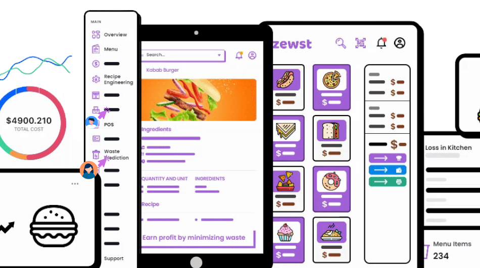
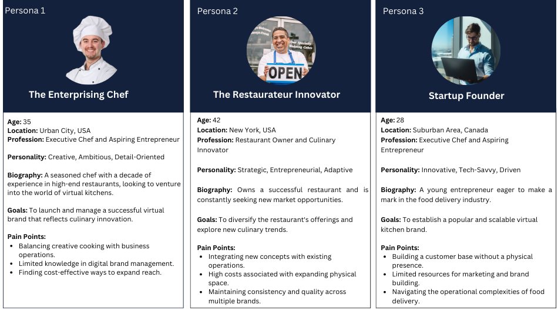
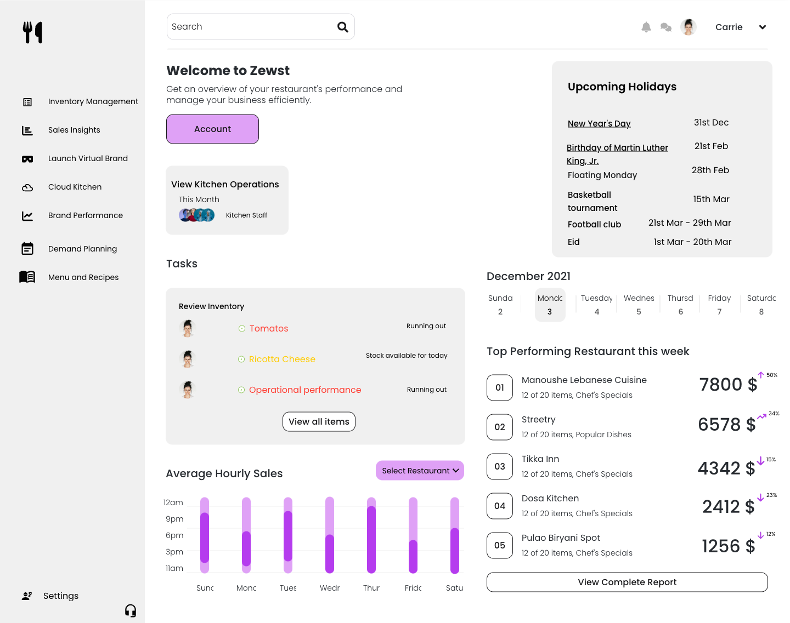
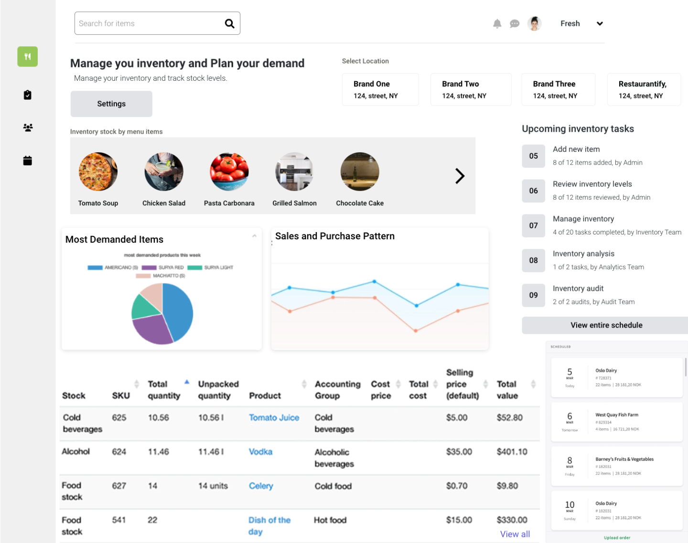
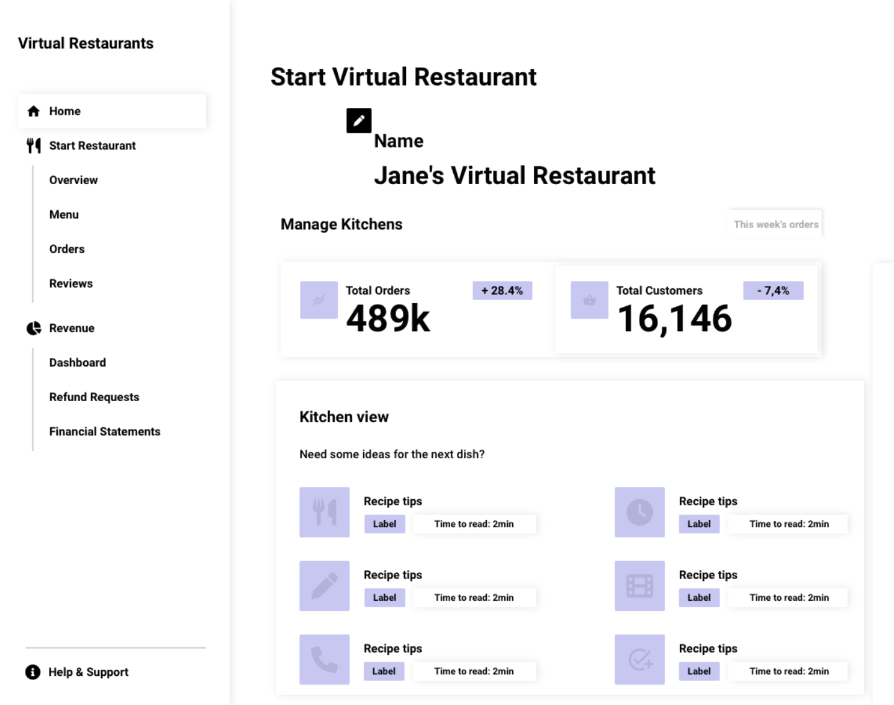
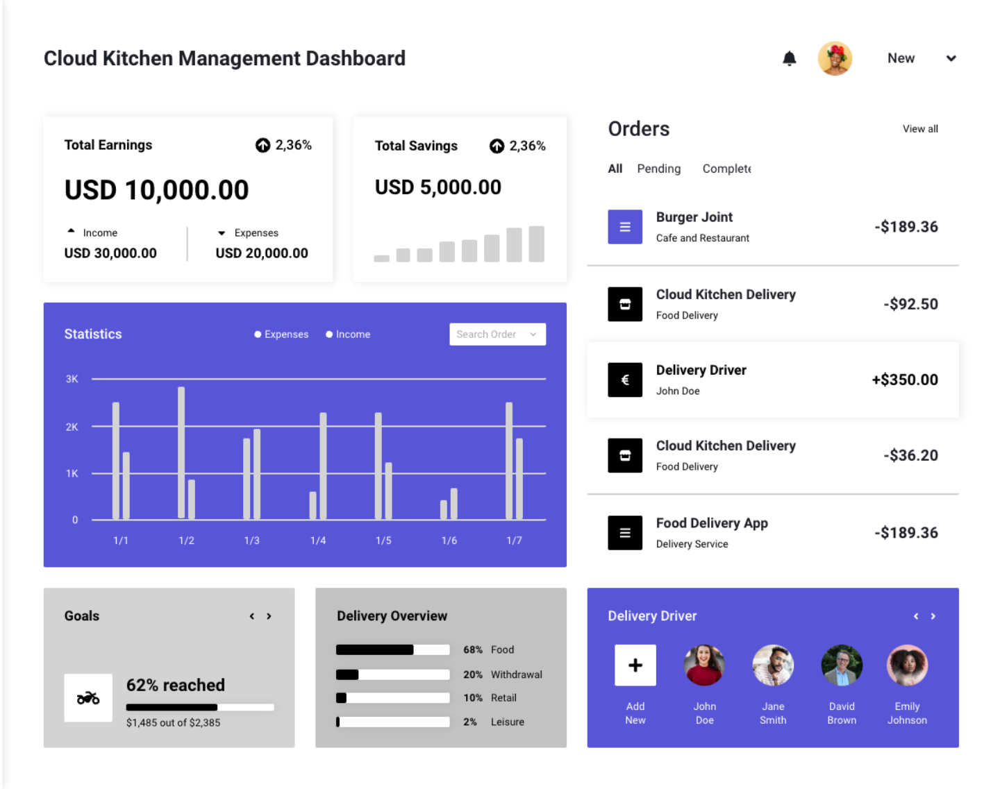

.png)

Overview
Overview I joined the organization when it was focused on UBF, a platform connecting charitable donors with restaurants to distribute surplus food. In working closely with these restaurants, we unearthed a profound opportunity: a dedicated tool to help restaurants optimize operations and reduce waste. This realization sparked the concept of Zewst.
Role: Product Management, Project Management, User Experience Design
Duration: January 2021 - January 2023
Results: As a Product Manager, I led the development and launch of the product, culminating in the signing of Letters of Intent (LOIs) from eight clients, a clear indicator of its immediate market appeal and potential. Although I departed shortly after the launch, this early achievement underscored the product's strong foundation and promise for future growth.
Background
Zewst was founded in July 2021, born out of a vision to address the growing challenges in the food service industry, particularly in the realm of virtual kitchens and brand management. As someone who has walked the path of a restaurateur, a culinary innovator, and a food industry consultant, I have firsthand experience with the complexities and inefficiencies that plague traditional and emerging food businesses.
The cornerstone of Zewst's inception was the recognition of the untapped potential in cloud kitchens and virtual brands. The industry was ripe for innovation, with numerous entrepreneurs and established restaurant owners struggling to expand their reach and experiment with new concepts without being burdened by the high costs and risks associated with physical restaurant spaces.Zewst, therefore, was developed as a response to these industry pain points. Our platform aims to democratize the process of launching and managing virtual food brands, making it accessible to a wide array of users from startup food entrepreneurs to seasoned chefs and restaurant chains.
Joining the Zewst team was a decision driven by my passion to revolutionize how the food service industry operates in the digital age. My journey with Zewst is not just about building a product; it's about crafting an ecosystem that nurtures culinary innovation and reshapes the landscape of food service operations.
Problem Identification
Operational Inefficiency in Virtual Kitchens:
Managing multiple virtual brands or cloud kitchens often leads to logistical complexities and time wastage, akin to a kitchen with uncoordinated chefs.
Time and Resource Wastage:
A significant portion of time is spent on navigating operational and marketing hurdles, rather than focusing on culinary innovation or customer service.
Fragmented Systems for Order and Feedback Management
Reliance on disparate systems for handling orders, customer feedback, and marketing dilutes brand identity and complicates operations.
Dependency on Third-Party Platforms
Using multiple platforms for order processing and delivery leads to increased costs and challenges in building a loyal customer base.
Zewst's solution streamlines these processes, offering a cohesive platform for efficient virtual kitchen management, empowering culinary professionals to focus on creating exceptional food experiences.- Operational Inefficiency in Virtual Kitchens:
User Identification
Although the initial customer profile and solutions addressing their pain points have already been set by the time I joined the team, I still decided to redefine customer profile

UI/UX Design Process
In the early stages of developing Zewst, we explored various initial concepts while iterating on the design. Here's a glimpse into the preliminary features we played with.

Dashboard / Overview
The first screen we designed was the Real-Time Analytics Dashboard, a cornerstone feature of Zewst. This dashboard is engineered to offer immediate and insightful analytics into various aspects of a restaurant's operations. It's not just about presenting data; it's about transforming it into actionable insights.

Demand Planning
Inventory Management screen in Zewst is a sophisticated blend of real-time tracking and predictive analytics. It meticulously monitors inventory levels, providing alerts for low stock and suggestions for reorder points based on sales trends. A standout feature is the demand planning module, which allows for forecasting and inventory preparation for upcoming events, ensuring kitchens are well-equipped for any surge in demand.

Multi-Brand Management
This feature, accessible via a single, user-friendly interface, allows for seamless management of distinct branding elements, menus, and pricing strategies for each brand. Users can effortlessly customize and update individual brand identities, adjust menu offerings, and set competitive pricing, all from a centralized dashboard.
This streamlined approach not only simplifies the complexities associated with running multiple brands but also ensures that each brand maintains its unique character and operational efficiency, making it an indispensable tool for modern, diversified culinary enterprises.

Cloud kitchen food delivery management
The Cloud Kitchen Food Delivery Management feature in Zewst is designed to streamline and optimize the entire process of food delivery for cloud kitchens. This comprehensive module integrates order taking, preparation, and delivery coordination into a seamless workflow. It facilitates real-time order tracking from the moment an order is placed until it reaches the customer, ensuring efficiency and customer satisfaction.
Key Take Away
My tenure as a Product Manager at Zewst has been a journey of growth and learning, underlining the essence of product leadership and the anatomy of a successful product. The development of our central kitchen management module, for instance, provided ample opportunities to fine-tune the nuances of our offering through rigorous user testing and in-depth interviews.
The most valuable insight I have gained is that the core of a good product lies not in the eureka moments or in the depth of product intuition alone. Rather, it stems from an unwavering dedication to understanding and addressing the users' needs and pain points. A good product is the result of meticulous attention to the user's voice, an obsession with solving their problems, and the relentless pursuit of delivering value that resonates on a practical level.
Moving forward, the path is clear: to continue to place the user at the heart of the product development process. This means not only actively seeking their feedback but also anticipating their needs and evolving the product to not just meet but exceed their expectations. As a Product Manager, the goal is to champion a user-centric approach that drives innovation